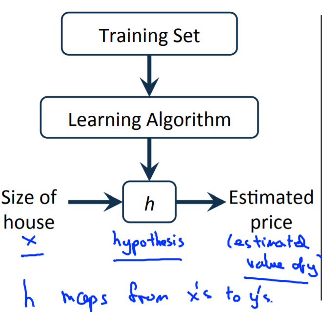
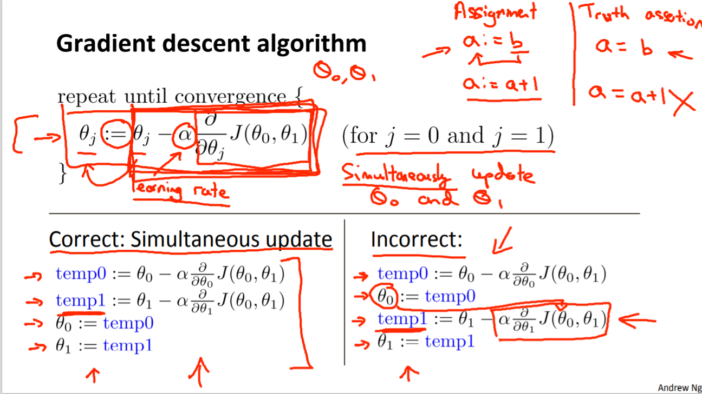

cousera_machinelearning_week1
我在cousera上学习了斯坦福大学吴恩达的《机器学习》，每周将记录当周的学习总结笔记，这是该系列笔记的第一篇，希望能够继续坚持下去。
Definition & type
机器学习的定义:
“A computer program is said to learn from experience E with respect to some class of tasks T and performance measure P, if its performance at tasks in T, as measured by P, improves with experience E.” — Tom Mitchell
机器学习：监督式学习、无监督学习 - 监督式学习：需要包含正确结果的训练集。常见问题有回归、分类问题。
课程中的例子只处理了单变量，即通过肿瘤的大小来判断是良性肿瘤还是恶性肿瘤，但实际问题中往往需要多维变量，来进行预测或者分类。 - 无监督学习：无已知的正确结果，例如聚类问题，cocktail party problem.
Model reprensentation

model representation
假设函数
例子中，试图通过给出训练集，一系列算法，获得假设函数；然后按照假设函数，根据房子的大小，来估测它的价格。此时的假设函数为: \[h_{\theta}(x)=\theta_0+\theta_1x\]，这是一个单变量回归问题，变量为\(x\),我们需要通过训练集，参数是\(\theta_0\),\(\theta_1\)。那么怎么获得最优参数，使得回归效果最好（需要明确最好的定义是什么），因此引入了损失函数。
损失函数(cost function)
选择合适的\(\theta_0\),\(\theta_1\)，使预测值\(h_\theta(x)\)与训练集中的\(y\)最接近。损失函数（其中\(m\)为\((x,y)\)）的数目： \[J(\theta_0,\theta_1)=\frac{1}{2m}\times\sum_{i=1}^m(h_\theta(x^{(i)})-y^{(i)})^2\]。
合适的\(\theta_0\),\(\theta_1\)能够使损失函数最小。
损失函数最小化
\(\theta_0=0\)(即拟合曲线过原点) \[J(\theta_1)=\frac{1}{2m}\times\sum_{i=1}^m(\theta_1x^{(i)}-y^{(i)})^2\] 此时损失函数为一个关于\(\theta_1\)的一元二次函数，存在极小值点，当\(\theta_1\)取极小值点时，损失函数值最小。
\(\theta_0\neq0\) 假设函数不过原点，损失函数为二元二次函数，需要画contour plot，仍然存在一个使损失函数值最小的\(J(\theta_0,\theta_1)\)。
梯度下降法
梯度下降法是一种求\(\theta_0,\theta_1\)的方法。 - 首先设置初始值\(\theta_0,\theta_1\) - 不断改变\(\theta_0,\theta_1\)，降低\(J(\theta_0,\theta_1)\)，直到取到最小值。

Simultaneous update \(\theta_0,\theta_1\)
\[\theta_j:=\theta_j-\alpha\frac{\partial J(\theta_0,\theta_1)}{\partial\theta_j}\\ \theta_0:=\theta_0-\alpha\frac{1}{m}\sum_{i=1}^m(h_\theta(x^{i})-y^i)\\\theta_1:=\theta_1-\alpha\frac{1}{m}\sum_{i=1}^m(h_\theta(x^{i})-y^i)\cdot x^{i} \] 不断重复，直至收敛，\(\alpha\)为下降速率。
Review linear algebra
基本运算：
- \(n\times m\)维矩阵，为\(n\)行，\(m\)列矩阵。向量是只含有一列的矩阵。
- 加、减、放大缩小、矩阵相乘
- identity matrix, 逆矩阵
- Inverse（求逆矩阵） & transverse（转置）
举例
- 预测=数据矩阵\(\times\)参数 \[\begin{bmatrix}1,2104\\1,1416\\1,1534\\1,852\end{bmatrix}\times \begin{bmatrix}-40\\0.25\end{bmatrix}\] 矩阵相乘的方法可以使我们简洁地代表预测值的计算。
In Octave
A = [1,2,3,4,5,6,7,8,9,10]
v = [1;2;3]
[m,n] = size(A)% Get the dimension of the matrix A,where m=rows, n=columns.
dim_A = size(A)
dim_Z = size(v)
A_23 = A(2,3)%?
A = [1,2,4;5,3,2]
B = [1,3,4;5,2,1]
s=2
add_AB = A + B
sub_AB = A - B
mult_As = A * s
div_As = A / s
add_As = A + s % attention!
% Multiplication properties
A = [1,2;4,5]
B = [1,1;0,2]
I = eye(2)# initialize a 2 by 2 identity matrix
AI = A*I
IA = I*A
AB = A*B
BA = B*A
% Note that IA = AI but AB != BA
# Inverse & Transverse
Inv_A = pinv(A)
Transv_A = transpose(A)问题
- 不明白为什么损失函数需要除以\(\frac{1}{2}\)。
- 梯度下降法需要手动验算，多看点资料。